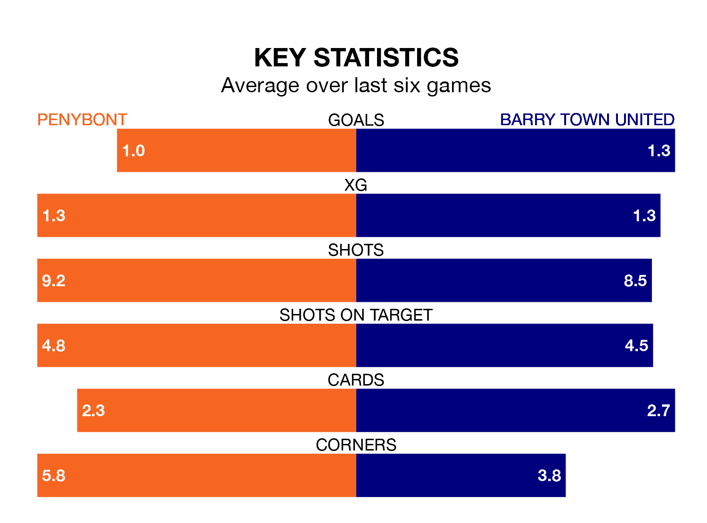

Barry Town United travel to the SDM Glass Stadium for Saturday lunchtime's match against Penybont looking to bounce back from defeat last time out in Welsh Premier League.
The Dragons, who sit zero in the league after 23 games, fell to a 3-0 home defeat to Pontypridd Town AFC on February 3.
They face a Penybont side who picked up a win in their last match, a 2-1 victory against Colwyn Bay, and who sit zero in the table.
In the last 10 years, Penybont and Barry Town have played each other on 10 occasions. Penybont won five of them, Barry Town two, and they drew three times.
On average, Bont scored 1.4 goals and the Dragons 0.9 in those matches.
Their last meeting was on November 28, when they played out a 1-1 draw.
With 27 goals in 23 games so far this season, Barry Town are the league's-2th-lowest scorers with 1.2 goals per game. And they are conceding more than average, letting in 44 goals at a rate of 1.9 per game.
Penybont are also below average scorers, with 1.3 goals per game, compared to a league average of 1.5. They have conceded 1.4 goals per game.
Bont are in mixed form in Welsh Premier League, with three wins and three losses from their last six games.
With two wins and a draw over that period, United's form is slightly worse – they have taken seven points from 18, compared to the hosts' nine.
Updated: 14:59 (UTC), 05/02/24